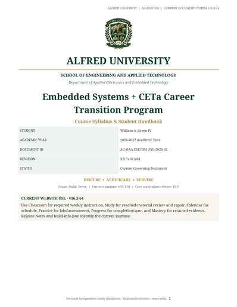
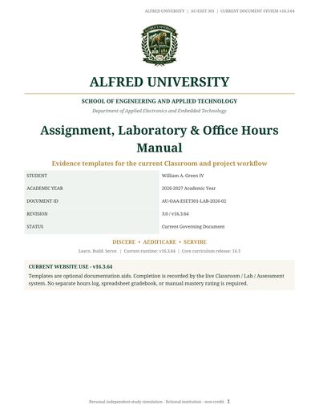
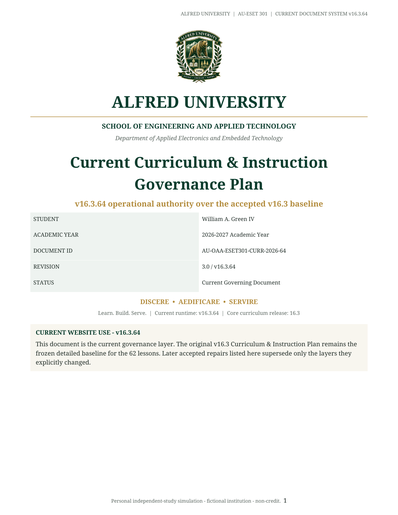
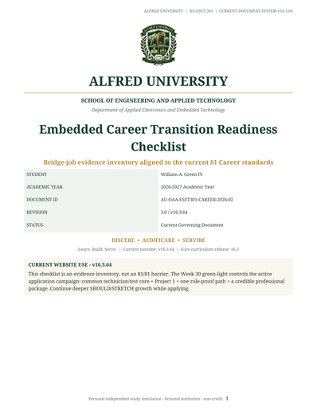

Syllabus & Student Handbook
Current 31-week schedule, evidence-based completion, dual-source CETa readiness, Teaching Media roles, safety, integrity, and version authority.
Current governing documents are separated from technical baselines and historical evidence so an older report is never mistaken for the live course policy.
Rebuilt for v16.3.64 around the live Classroom, Study, Teaching Media, Study Guide, assessment, Calendar, and career-evidence system.

Current 31-week schedule, evidence-based completion, dual-source CETa readiness, Teaching Media roles, safety, integrity, and version authority.
Current website workflow: separate Learn/Study resume paths, Focus Prep, Study week selection, Calendar completion truth, assessments, Cloud Sync, and bundled Study Guide behavior.
Open current PDF →
Current Classroom Required / Study / Engineering Library architecture, dual-channel section coverage, CETa Study Guide integration, and resource-selection rules.
Open current PDF →
Current lab/application evidence rule, learning/lab templates, troubleshooting record, Project 1 design review, test-report structure, role-proof dossier, and all 24 lab routes.
Open current PDF →
The concise current authority layer over the frozen v16.3 detailed lesson baseline: 31-week sequence, authority stack, resource architecture, readiness rules, Study Guide, UX, progress, and version discipline.

Rebuilt directly from the current v16.3.42 81-standard Career traceability set. The checklist is an evidence inventory; 81/81 is not a barrier to the Week 30 application green light.
Open current PDF →Reserved for after AU-ESET 301 completion requirements and required mastery/practical gates are actually satisfied.
Open PDF →These records govern specific technical layers. They are not learner policy documents unless the governing documents above point to them.
The authoritative current 81-standard Career provenance, prerequisite, instructional-home, dependency, review-routing, and independent-acceptance package.
343 current rows: 262 CETa competencies plus all 81 current Career standards. The prior 340-row v16.3 file remains a historical baseline.
Current consolidated record for the 347-assignment Teaching Media architecture, 214-record reading index, Study Guide disposition, semantic refresh, document authority, and v16.3.64 QA.
Open verification report →Frozen acceptance evidence for the 62 integrated lessons and original v16.3 semantic/instructional baseline. Later runtime, Career, media, and document layers are governed separately.
Open baseline report →Frozen 62-row depth audit for the accepted lesson baseline. It remains useful evidence for that layer and is not a current runtime/resource-system certification.
Open lesson-depth audit →These files remain available for provenance. Their wording reflects the release they originally documented.